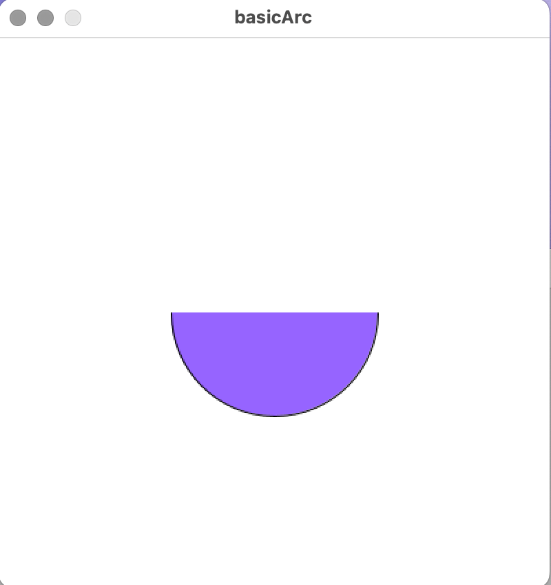
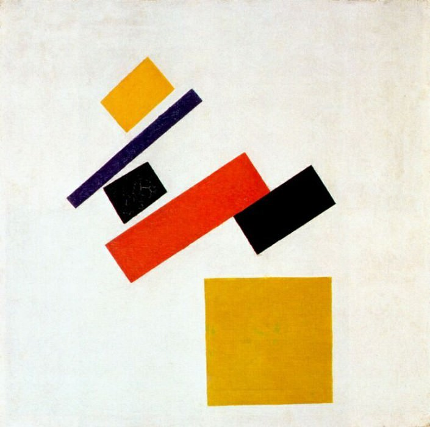
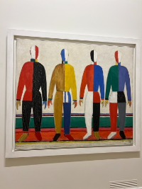
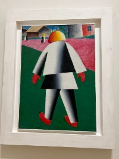

The Flow of a Program
When writing a program, some tasks need to happen once (e.g., setting the canvas size), while others repeat continuously. Processing handles this using two named blocks of code: setup() and draw(). These are enclosed in curly brackets { }, which define a block of code.
void setup() {
size(700, 300); // Must be the first statement
background(0); // Set the background color
}
The setup() block runs once at the start of the program. Everything inside it executes sequentially. The draw() function begins after setup() completes and loops continuously, running approximately 60 times per second (modifiable with the frameRate() function). This allows for animations.
void draw() {
frameRate(20); // Limits the loop to 20 times per second
println("I am printing this message 20 times a second!");
}
Mouse Interaction
Processing tracks the mouse cursor’s position using two variables:
mouseX: Horizontal positionmouseY: Vertical position
Example:
void setup() {
size(500, 500);
background(255); // White background
}
void draw() {
println(mouseX, mouseY); // Print mouse position
}
Use this information to position shapes dynamically on the canvas.
Drawing an Arc
An arc is a section of an ellipse. Use the arc() function with the following parameters:
arc(x, y, width, height, start, stop);
Where:
x,y: Center coordinates of the ellipse.width,height: Dimensions of the ellipse.start,stop: Angles in radians to define the arc’s range.
Angles in Processing are measured in radians. Angle 0 starts pointing to the right (along the positive x-axis), and the angle increases clockwise because the y-axis points downward on the screen. A full turn is TWO_PI, and half a turn is PI. You can convert degrees to radians with radians(deg).
Example: Drawing a Semicircle
void setup() {
size(400, 400);
background(255);
fill(150, 100, 255); // Purple fill
arc(200, 200, 150, 150, 0, PI); // 0 to 180 degrees
}
]
Key Points to Remember:
- Angles are in radians (not degrees). Use
radians(degrees)to convert. - Predefined constants:
PI(3.14): Half-circle (180°).TWO_PI(6.28): Full circle (360°).HALF_PI(1.57): Quarter-circle (90°).QUARTER_PI(0.78): Eighth-circle (45°).
Drawing Irregular Shapes
Custom shapes can be created using beginShape() and endShape(), which define a series of vertices.
Steps to Create a Shape
- Start with
beginShape(). - Add vertices using
vertex(x, y). - Close the shape with
endShape()(useCLOSEto connect the last vertex to the first).
Example: Open and Closed Shapes
void setup() {
size(400, 400);
background(255);
// Open shape
beginShape();
vertex(100, 100);
vertex(150, 200);
vertex(200, 100);
endShape(); // Not closed
// Closed shape
beginShape();
vertex(100, 300);
vertex(150, 400);
vertex(200, 300);
endShape(CLOSE); // Closed shape
}
Shape Types
When passing a parameter to beginShape(), you can specify the type of shape:
POINTS: Each vertex is a point.LINES: Connects vertices in pairs as line segments.TRIANGLES: Groups vertices into triangles.QUADS: Groups vertices into quadrilaterals.POLYGON(default): Custom polygon.
Example: Using TRIANGLES
void setup() {
size(400, 400);
background(255);
beginShape(TRIANGLES);
vertex(100, 100);
vertex(150, 200);
vertex(200, 100);
vertex(250, 200);
vertex(300, 100);
vertex(200, 300);
endShape();
}
Kazimir Malevich and Suprematism
Kazimir Malevich was a Russian avant-garde artist who emphasized abstract forms over realism. His Suprematist works can be recreated in Processing using beginShape() and endShape().
Example: Inspired by Malevich
]
void setup() {
size(705, 700);
noStroke();
background(234, 234, 216); // Light gray background
// Yellow square
fill(232, 172, 10);
rect(335, 455, 200, 200);
// Yellow rectangle
fill(216, 165, 24);
beginShape();
vertex(245, 95);
vertex(285, 145);
vertex(208, 213);
vertex(165, 165);
endShape(CLOSE);
// Red rectangle
fill(232, 78, 7);
beginShape();
vertex(400, 250);
vertex(444, 314);
vertex(215, 463);
vertex(173, 402);
endShape(CLOSE);
}
Challenge:
Recreate Malevich’s paintings or create your own abstract designs using beginShape() and endShape(). Experiment with angles, colors, and shapes for extra credit.
]
]
Quick Reference
| Function | Description |
|---|---|
size(w, h) |
Sets canvas dimensions. |
background(c) |
Sets background color. |
arc(x, y, w, h, start, stop) |
Draws an arc. |
beginShape() |
Starts defining a custom shape. |
endShape() |
Ends the shape definition. |
vertex(x, y) |
Adds a vertex to the shape. |
fill(r, g, b) |
Sets fill color for shapes. |
frameRate(fps) |
Sets the loop rate of draw(). |
Have fun experimenting with Processing!